01
杰西家 · 清理现场
把地板洗干净，不等于恢复原样。
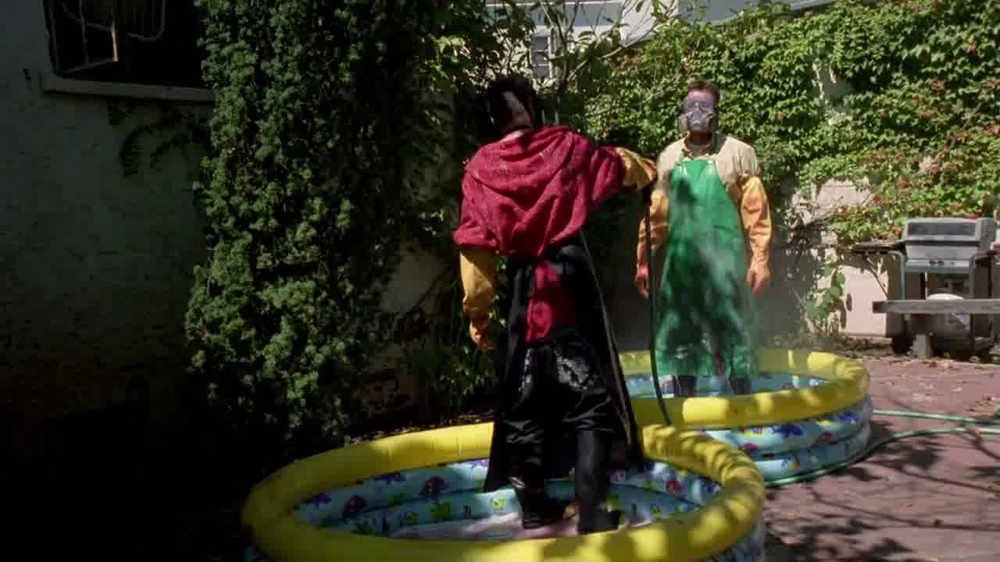
剧情事实两人清理上集坍塌留下的后果。画面穿插年轻沃尔特与研究搭档讨论人体组成的回忆。 [1][2]
这一场为什么重要 · 个人解读
劳动非常具体，记忆却提出了另一个尺度：一个人能否只按物质来理解？回忆并没有代替眼前的后果，而是让“处理掉”这几个字显得更沉重。人命不会因为清理变得干净，就重新变成无事发生。
因此 →清理之后，地下室里还有一个活着的人。

叫得出他的名字，
还能够杀死他吗？
一张清单，一份三明治，一个拼不齐的盘子。
他不断寻找放人的理由，直到发现缺少的那一片。
剧透边界 剧透截至 S01E03，包含本集结尾
12 个剧情节点 · 7 位人物 · 04 组冲突克雷兹八仍被锁在地下室。沃尔特一再拖延，努力找到一种可以不杀人的解决办法。第三集给这份犹豫以充足的时间：对话让他认识对方，病情暴露使他短暂失去优势，餐盘的缺口又让希望变成怀疑。它写的不是一个人突然“变坏”的标签，而是一次有阻力、有恐惧、也有不可撤销后果的决定。
读这一集，跟住三条线认识与信任 / 恐惧与责任 / 不可撤回的决定
剧情事实年轻的沃尔特与研究搭档讨论人体的化学组成；画面与他和杰西清理后果的当下相交。 [2]
个人解读回忆中的问题，被放到一个必须决定别人能否活着的当下。物质分析并没有给出伦理答案。影片让科学语言与杀人困境相碰，要求观众看见成分表无法代替的那个人。
本页只使用截至 S01E03 已揭示的信息；下文包含本集结尾。
沿本集呈现顺序合并相邻事件，回忆单列。线人身份仅在本集结尾揭示，不倒用于此前的人物判断。
越知道名字，越难把人当作任务。

剧情事实两人清理上集坍塌留下的后果。画面穿插年轻沃尔特与研究搭档讨论人体组成的回忆。 [1][2]
劳动非常具体，记忆却提出了另一个尺度：一个人能否只按物质来理解？回忆并没有代替眼前的后果，而是让“处理掉”这几个字显得更沉重。人命不会因为清理变得干净，就重新变成无事发生。
因此 →清理之后，地下室里还有一个活着的人。
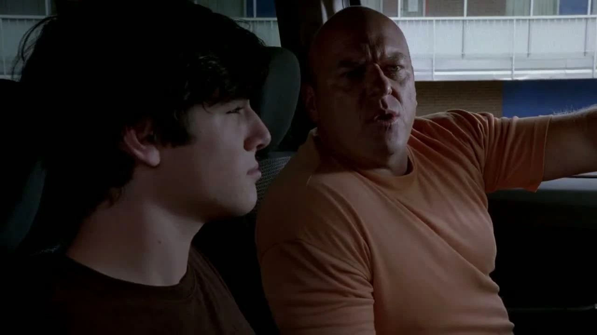
剧情事实斯凯勒借写故事询问大麻是否改变人的状态。玛丽认定她在暗指小沃尔特，转而请汉克干预。 [1][2]
沃尔特编给妻子的说法没有停在夫妻之间。信息每转述一次，都被亲人用自己的理解补全一次。小沃尔特并未参与父亲的秘密，却开始承受它在家庭里造成的误判。
因此 →误会推动汉克行动，也让家庭的关心偏离真正的问题。
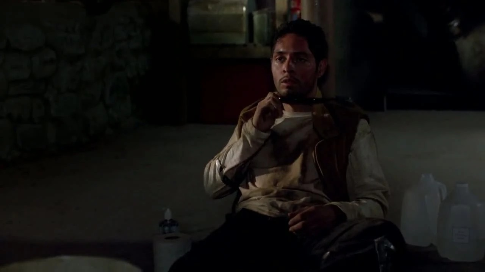
剧情事实克雷兹八说出沃尔特的姓名、工作和儿子的情况，解释这些是杰西此前告诉他的。 [1][2]
私人生活穿过地下室的门，改变了风险的重量。沃尔特想保护家人的理由越具体，俘虏掌握这些细节就越让他恐惧。这个发现也把他的愤怒转向搭档：面对无解的决定，先找一个可以责怪的人会容易得多。
因此 →他上楼找杰西，冲突从信息泄露升级为身体争斗。
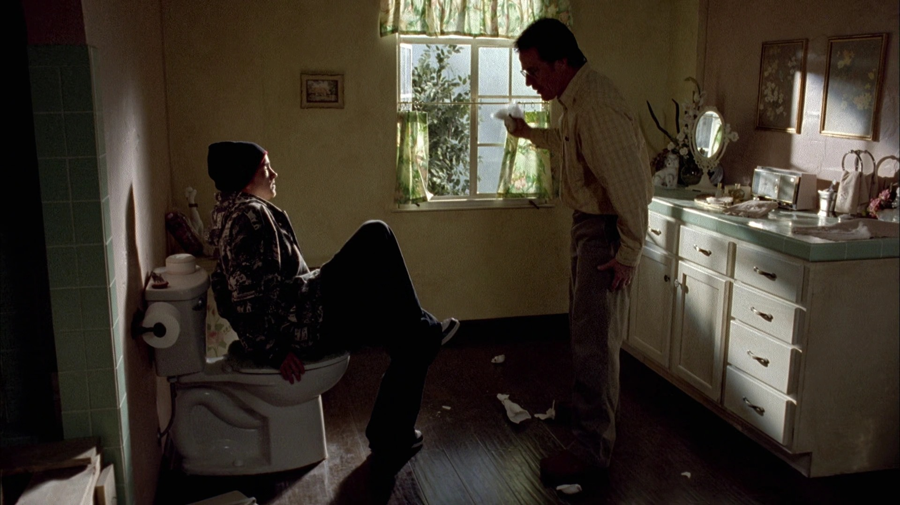
剧情事实沃尔特冲进正在吸毒的杰西所在浴室，两人争斗。杰西强调硬币已经决定分工，拒绝继续替他承担，随后离开。 [1][2]
两人说的都含有事实，也都把不利于自己的部分推到边上。杰西泄露了信息，沃尔特也确实拖延了约定。争执没有解决地下室的事，只让那个本应共同面对的困境，最后只剩一个人在场。
因此 →沃尔特独自留下，与俘虏开始更长的谈话。
秘密进入对话，也使两位搭档之间的责怪更尖锐。回忆与地下室并置，开始追问人是否能被拆解成几项成分。
账单式的判断，装不下一个人的故事。
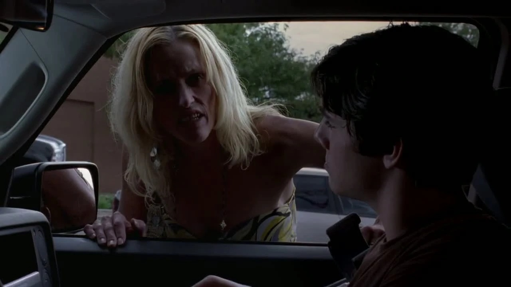
剧情事实汉克带小沃尔特去旅馆，叫来温迪，让少年观看吸毒者的处境。温迪以为他们是在向自己找大麻。 [1][2]
这一段与地下室形成微妙对照：汉克也在用自己的目的规定另一个人如何出场。温迪被当成警示标本，她的回答却打乱了教育表演。这里呈现的是汉克的偏见和做法，不能把他的训诫当作客观的成瘾知识。
因此 →误会并未查清，真正的秘密仍远离家人的视线。
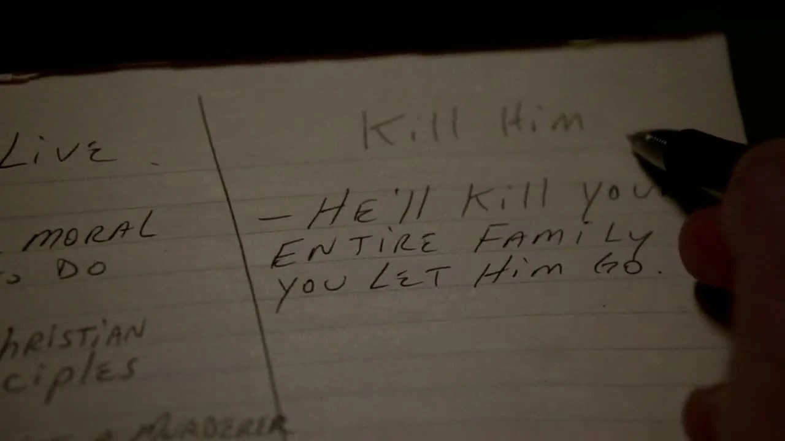
剧情事实沃尔特列出放人与杀人的理由。给妻子打电话时，他再次以洗车店加班为借口，却被告知她已知道他辞职。 [1][2]
纸面清单试图把冲突整理成可以比较的项目，家庭电话则让另一种逃避当场失效。他既不能轻易放走俘虏，也不能再借工作拖延解释。两个领域都在逼他承认：决定已经不可能由别人替他完成。
因此 →家庭退路收窄，他继续把目光投向地下室。
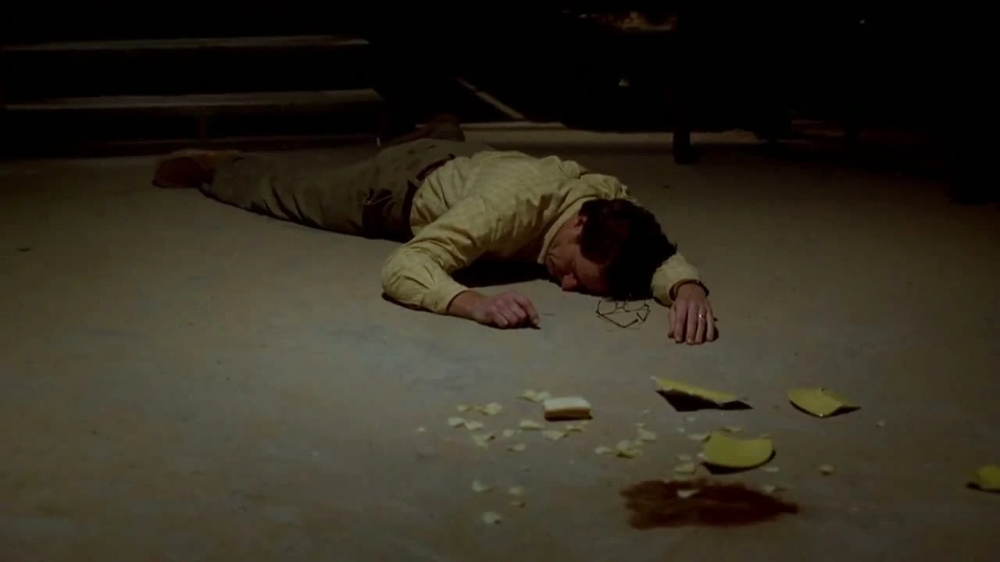
剧情事实沃尔特给俘虏送三明治时剧烈咳嗽并昏倒，盘子摔碎。醒来后，他告诉克雷兹八自己患有肺癌。 [1][2]
病情进入关系的顺序很刺痛：最亲近的家人还不知道，准备被他决定生死的人却先听到。疾病暂时削弱看守与俘虏的高低差，使两人能以脆弱的人相认，也同时创造了一个被利用的机会。
因此 →碎盘成为后面改变判断的物证。
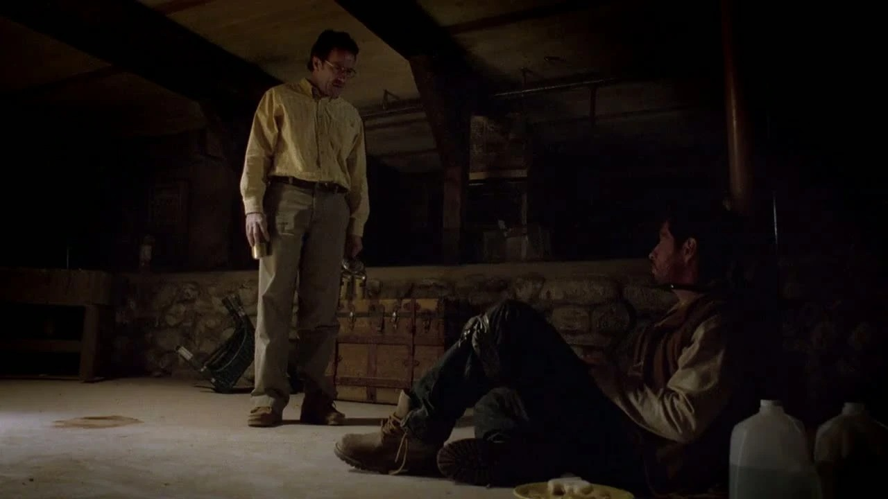
剧情事实俘虏说出本名多明戈，谈自己的教育、音乐兴趣和父亲经营的家具店。沃尔特承认自己在寻找不杀他的理由。 [1][2]
本名改变了对话的距离。对方不再只是昨天的枪口，也有父亲、职业岔路和未完成的愿望。这些内容并不保证承诺可信，却足以阻止观众把之后的死亡读成无分量的清除障碍。
因此 →沃尔特开始相信自己或许能找到和平放人的出口。
家人因误会忙碌，沃尔特则向俘虏寻找放人的理由。他的病情先被对手知道，亲近的人仍被隔绝。
一个小缺口，使和解的想象崩塌。
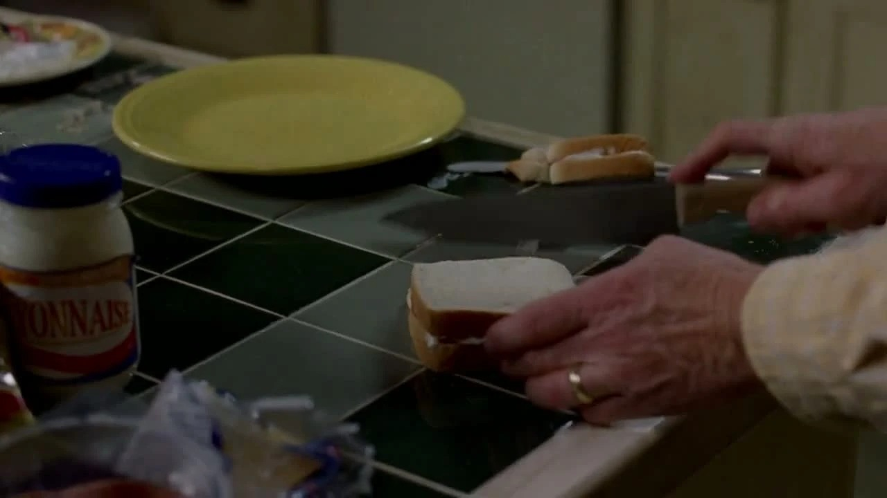
剧情事实沃尔特想起给儿子买婴儿床时去过多明戈家的家具店，两人谈起旧广告和销售习惯。他随后表示要去取钥匙。 [1][2]
共同的城市和一次普通购物，使危险人物与父亲生活发生了意外重叠。三明治、闲聊和笑声让和解变得可想象，也让沃尔特更需要相信这条路成立。亲近是真实经验，仍不是能够验证未来的契约。
因此 →他转身去取钥匙，视线落到此前打碎的盘子。
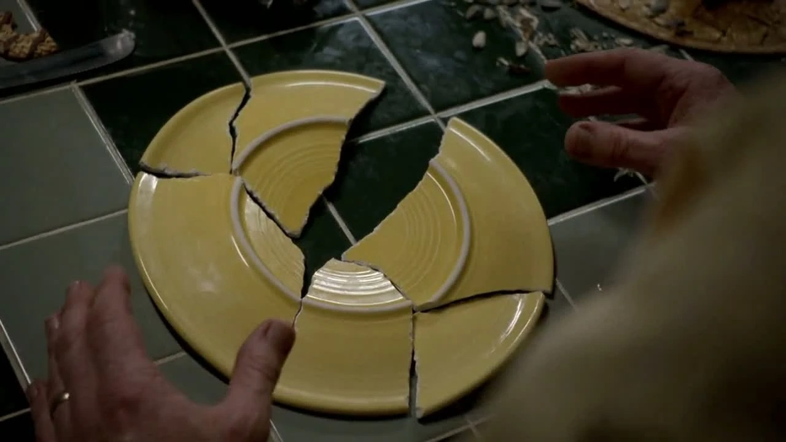
剧情事实沃尔特重新拼起餐盘，发现缺少一块可以作武器的碎片。他意识到多明戈可能趁自己昏倒时把它藏了起来。 [1][2]
这场发现不靠一段新的宣言，而靠物品的形状改变理解。前面的温情没有因此从未存在，却不再足以证明安全。沃尔特一边拼盘，一边在失去刚刚建立的放人理由；缺口同时是证据，也是希望的破洞。
因此 →他带着新的怀疑返回地下室。
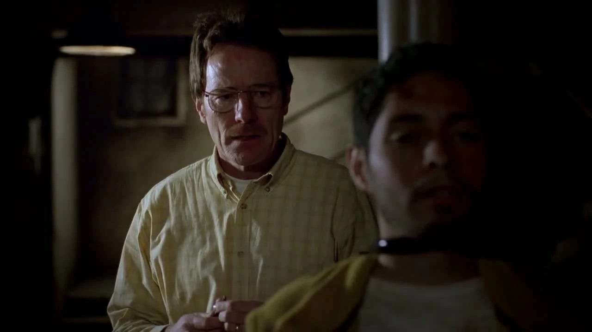
剧情事实沃尔特试探多明戈是否藏有碎片。对方在最后袭击他，沃尔特用锁具杀死了他，并反复道歉。 [1][2]
当下存在真实的反击和生命威胁，不能抹去；此前持续拘禁、最终掌握释放权的结构，也没有消失。反复的道歉让这场死亡留下道德重量。人物没有因赢得生存就获得一种清白、轻松的新身份。
因此 →他离开时，地下室的空缺已经成为无法撤销的事实。
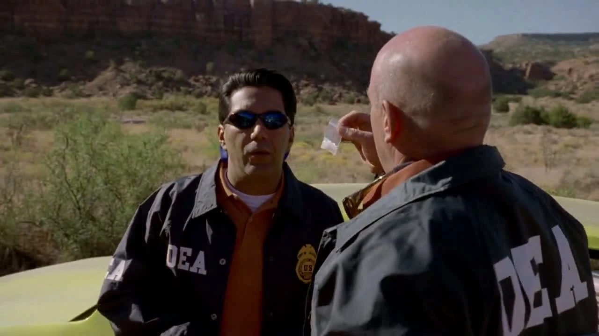
剧情事实杰西回来发现俘虏不在、车锁留下。DEA 调查遗留车辆和制品，谈到失踪的线人。沃尔特回家，向斯凯勒表示有事要告诉她。 [1][2]
线人身份此时才进入观众的信息，不能拿它倒推沃尔特此前已经知道什么。他结束一场拘禁，另一路调查却更近了。回到妻子身边的开口也只是一道门槛：本集没有让他把所有事实一次交代完。
因此 →下一步的结果留给下一集；这里停在已经发生的杀人与将要发生的谈话。
共同记忆与现实威胁并存。杀人之后没有回到正常生活的庆祝，只有调查更近、家庭真话将被说出的门槛。
切换三阶段，看信息如何改变恐惧与亲近。克雷兹八在本集中说出本名多明戈；人物档案不加入下一集信息。
家人误读异常，搭档互相指责，地下室的决定仍被拖延。

决定者 / 地下室的看守
找到一个既不用杀人、又能保障家人安全的理由。
拘禁的控制权、专业判断，以及选择何时开口的权力。
向克雷兹八透露癌症，准备放人，发现餐盘缺口后改变决定并杀死对方。
他不是从来没有道德顾虑；正因为顾虑真实，最后的行动才构成一次不能撤回的跨越。
把恐惧化成纸上的理由，仍希望找到另一条路。
四个角度：俘虏的人性、自己的道德阻力、搭档的互相追责，以及关心如何被误会带偏。
多明戈谈起自己想学音乐、被父亲劝去读商科，沃尔特则记起为儿子买床的往事。对话使双方暂时摆脱“老师”和“毒贩”这两种功能性称呼。
盘子的缺口没有使这些故事自动失真。它揭示的是另一件事：一个人能够讲述真实生活，同时也准备反击。将对方完整地看成人，并不等于已经解决了彼此之间的安全与权力问题。
个人解读：不把温情当成无罪证明，也不把武器当成取消人性的理由。
把短句放回发生的场景。对白不是人物全部动机的证明，也可能是他选择让别人听见的那一部分。
Murder is wrong!杀人是不对的！中文自译
他列举放人与杀人的理由，试图为决定找到依据。
这句最普通的原则，在本集反而最难轻松兑现。它让最后的行为保留了与自身价值冲突的重量。
英文据本集对白转录核对，共 7 个词；中文为本页自译。图片用于提示人物与场景，具体镜头边界见图注。
物件、空间和声音怎样让人物的变化变得可见。以下为画面观察与个人解读。
研究回忆将化学与人的完整性并排。个人解读：镜头追问的不是一条可直接验证的灵魂结论，而是怎样理解一个正在失去生命的人。
回到相关场景 ↗克雷兹八说自己叫多明戈。个人解读：名字把角色从风险类别拉回生活个体，增加了伤害发生时的重量。
回到相关场景 ↗三明治让两人像普通人一样聊天，但车锁始终存在。个人解读：日常善意并没有让关系自然平等。
回到相关场景 ↗缺口让沃尔特重新理解对话。个人解读：发现通过拼图动作展开，观众与人物一起失去安心的理由。
回到相关场景 ↗杰西回来只看见结果。个人解读：空地下室显示某件事已经发生，也提醒两位搭档并未共同经历它。
回到相关场景 ↗汉克接近现场证据，家人却在误判少年。个人解读：故事让调查的推进与家庭理解的倒退同时发生。
回到相关场景 ↗第三集没有把杀死多明戈拍成干净利落的升级。它留给人物足够长的时间去恐惧、交谈、犹豫，再让一个物品的缺失击碎刚刚形成的希望。
多明戈既是一个人，也是现实威胁；沃尔特既在求生，也在承担自己此前选择制造的困局。两面一同保留，人物才有真正的分量。
回看那个改变判断的缺口 ↗剧透截至第一季第3集，包含本集结尾。不涉及后续集数或其他作品的揭示。 · 本篇止于此，不预告后续情节。